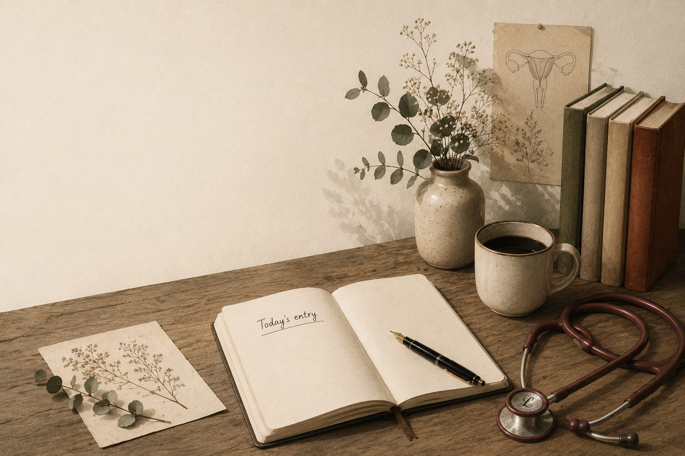

My2cents Inked
Where medicine meets meaning.
Thoughtful writing on women's health, medicine, stories, books, poetry, and the beautifully ordinary moments that shape our lives.
Featured Article
Browse by Topic
The Heart of This Publication
Women's Health
Cycles, pregnancy, PCOS, endometriosis, and menopause — in plain language, without condescension, from an obstetrician who takes your questions seriously.
Medicine
Notes from practice and teaching rounds, on bedside manner, slow diagnosis, and a job that never finishes teaching you.
Essays
Reflections on craft, attention, and the ordinary Tuesdays that quietly make up most of a life.
Stories
Short fiction — quiet, specific, and more interested in a true detail than a tidy ending.
Poetry
Short collections on memory, distance, motherhood, and the ordinary weather of a life.
Books & Chapters
On reading slowly, and the chapters I've contributed to books shaped by other people's questions as much as my own.
Latest Writing
View the full archive →Editor's Note
Medicine has taught me, more than anything else, how to listen. A consultation is short, and most of what a person needs to say rarely fits inside it — so I've spent twenty years learning to hear the sentence underneath the sentence, the question someone almost asked, the worry that arrives disguised as something else.
Writing is where those conversations get to continue. A patient's offhand remark, a poem I couldn't stop thinking about, a hard case from teaching rounds — some of it deserves more room than a consultation allows, and this is where I've made that room.
My2cents Inked is where medicine, literature, and everyday life meet, because I've never quite believed they were as separate as my training implied. A piece on menopause and a poem about a mother's suitcase live on the same page here, for the same reason: both came from paying attention. I hope some of it is useful to you, and I hope all of it keeps you company for a few unhurried minutes.
Currently Reading
Cutting for Stone
Abraham Verghese
A novel about twin surgeons that I keep returning to — it understands, better than almost anything else I've read, why medicine and storytelling have always needed each other.
Quote of the Week
“Attention is the rarest and purest form of generosity.”— Simone Weil